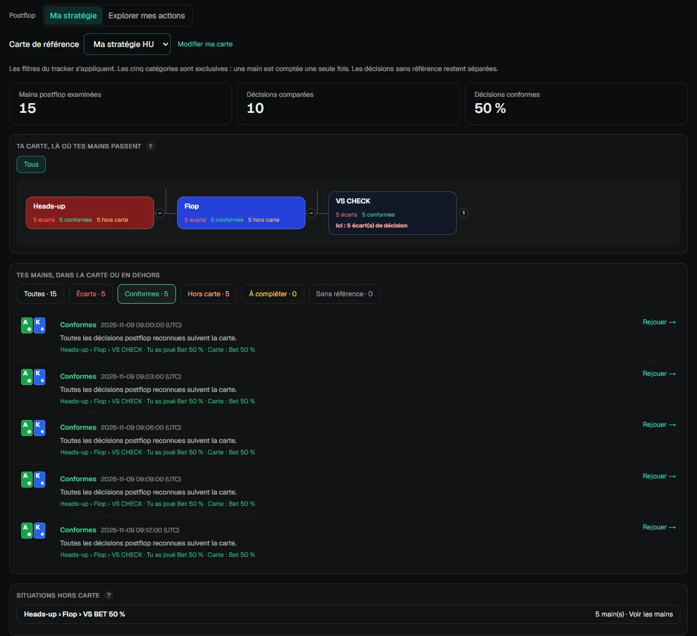

Ton premier essai
De l’installation à ton premier exercice.
Tu as besoin d’un PC Windows 10 ou 11 en 64 bits et d’historiques de mains Betclic, Unibet ou Winamax. Tes mains restent sur ton ordinateur.
L’essai commence à la création de ton compte, sans carte bancaire. Ensuite, tu peux conserver la version gratuite limitée à tes 2 000 Spins les plus récents, ou choisir une formule dans la page Compte de l’application.
Installe Fisherman Spin.
Télécharge l’installateur depuis la page officielle, lance-le, puis ouvre l’application. Si tu as déjà une version installée, ferme-la avant d’effectuer la mise à jour.
Télécharger pour WindowsCrée ton compte.
Ouvre le Tracker, puis la page Compte. Suis les indications d’inscription et de connexion pour activer ton essai. Aucun paiement n’est demandé pour commencer les 14 jours.
Importe une première session.
Dans le Tracker, ouvre Imports et sélectionne le dossier d’historiques enregistré par ta room, ou les fichiers d’une session terminée. Le logiciel analyse les historiques présents sur ton PC ; il ne récupère pas automatiquement les mains manquantes auprès de la room.
Si aucune main n’apparaît, vérifie que ta room enregistre bien les historiques et que tu as choisi le dossier qui les contient.
Renseigne tes références.
Dans Entraînement, ouvre Mes ranges ou Mes cartes et saisis une stratégie que tu souhaites travailler. Pour une carte mentale postflop, renseigne les situations, les actions et les tailles de mise utiles.
Une main sans référence exploitable ne peut pas être déclarée conforme. Commence par une situation précise que tu rencontres souvent.
Retrouve tes mains dans le Postflop.
Dans Leak Finder → Postflop → Ma stratégie, choisis ta carte de référence. Explore les mains conformes, les écarts et les situations hors carte. Les références incomplètes restent distinguées. Utilise Rejouer pour comprendre le déroulé d’une main.

Lance « Trouve le leak ».
Dans Entraînement → Trouve le leak, choisis les ranges préflop, les cartes postflop ou un mélange. Une série utilise des mains de Spins terminés couvertes par tes références ; elle peut compter moins de dix questions.
Réponds avant de voir la suite, lis la correction selon ta référence et ouvre le replayer si nécessaire. Si aucune question n’est proposée, complète une référence qui correspond à tes mains importées.
Les captures de ce guide utilisent des données d’exemple.
Un blocage ou un retour à partager ?
Indique ta room, ta version de Windows et l’étape qui pose problème. Pour signaler un souci, une description ou une capture sans information personnelle suffit.
Contacter Fisherman Spin